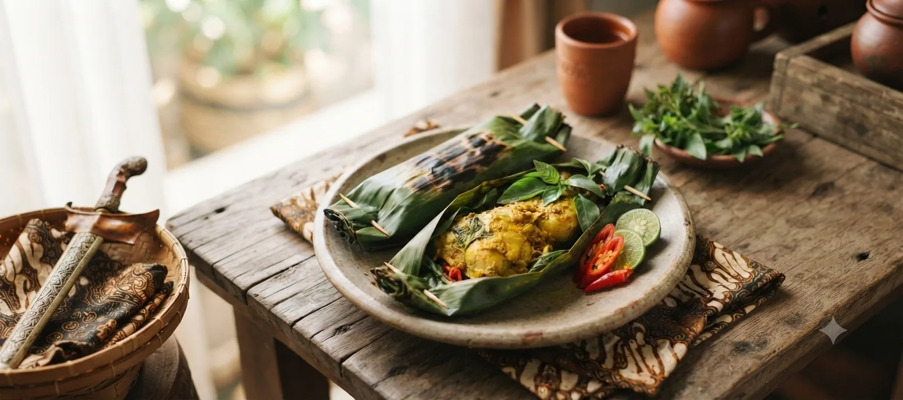
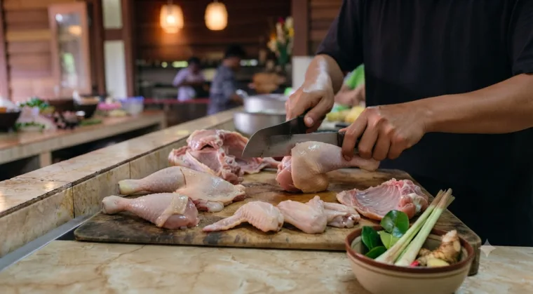
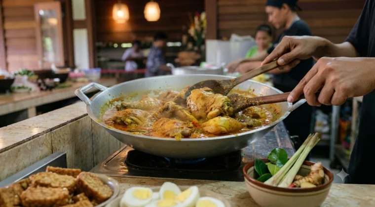
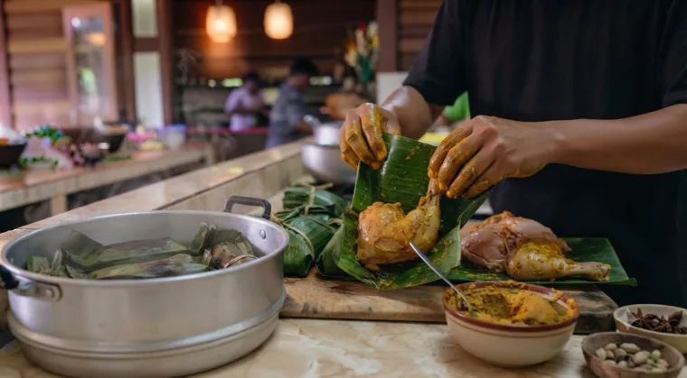
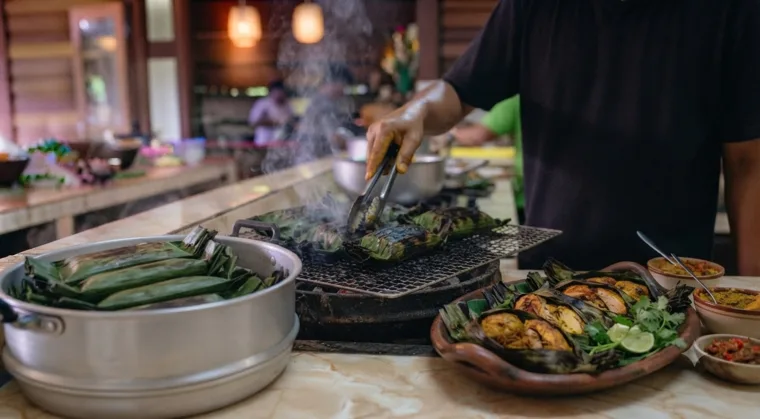

list_altBahan-bahan
- 800 gr / 1 ekor ayam
- 2 ikat daun kemangi
- 2 lembar daun salam
- 1 batang serai, memar
- 6 cabai rawit merah
- Garam, kaldu bubuk, dan daun pisang

Pepes ayam dimasak tanpa minyak melalui pengukusan dengan daun pisang, kaya protein berkualitas tinggi, serta rendah lemak jenuh dan aman untuk menu harian.
Ayam dipotong ukuran besar menjadi tujuh bagian, kemudian dicuci bersih dan disayat agar bumbu meresap.

Ungkep ayam dengan bumbu halus, daun salam, serai, garam, dan kaldu hingga air mulai menyusut.

Letakkan ayam, kemangi, dan cabai di atas daun pisang. Bungkus rapat lalu kukus selama kurang lebih 20 menit.

Panggang bungkusan sebentar untuk aroma yang lebih kuat, kemudian sajikan selagi hangat.

Pepes ayam merupakan pilihan menu yang lebih sehat karena dimasak dengan cara dikukus sehingga tidak memerlukan banyak minyak. Tambahkan daun kemangi dan cabai untuk memberikan aroma yang segar.